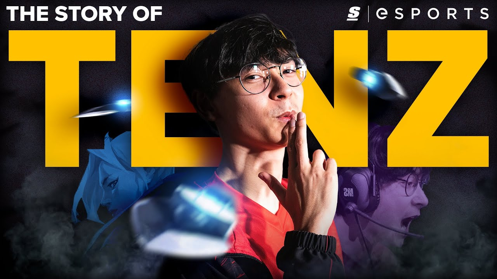

Tyson "TenZ" Van Ngo
TenZ is a Canadian online streamer, former professional Valorant player and former professional Counter-Strike: Global Offensive player.

The story of TenZ: Valorant's Chosen One
Here is a timeline of Tenz's accomplishments as a valorant professional player:
- April 2020 - TenZ retires from CS:GO to become Cloud9's first VALORANT pro
- July 2020 - Cloud9 loses to Sentinels in the final of the PAX Arena VALORANT Invitational
- January 2021 - TenZ steps down from C9's competitive roster to pursue content creation
- March 2021 - Sinatraa's alleged assault has Sentinels send for TenZ
- March 2021 - Sentinels defeat FaZe Clan to become NA's Stage 1 Masters champions
- April 2021 - Sentinels defeat Cloud9 Blue in Challengers 2 Finals
- May 2021 - Sentinels faces off against C9 Blue with a spot in Iceland on the line
- May 30 2021 - Sentinels claim the crown of best VALORANT team in the world
- June 2021 - Sentinels confirm buyout of TenZ's C9 contract in “seven-figure” deal
- May 2021 - Tenz and the Sentitnels never won another trophy for 3 years
- April 2023 - Sentinels head coach Adam Kaplan announced that TenZ would be temporarily benched due to illness and a hand injury.
- March 2024 - TenZ helped Sentinels to their second international trophy, winning the 2024 VCT Masters Madrid by defeating Gen.G 3-2.
- Septmeber 2024 - TenZ announced his retirement from professional Valorant marking an end to his journey as a professional player.
"TenZ is forever the face of Valorant"